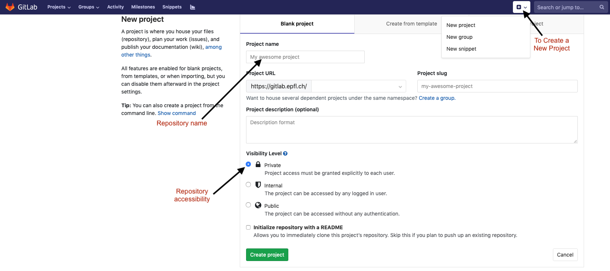

How to use GIT
This document provides some additional information regarding Git’s functionalities. For more detailed tutorials please use the references below.
Following references are recommended for beginner:
Git for Noobs answer many questions around git, its basic ideas and philosophy, common commands and different platforms based on git.
A step-by-step guide to git is a guide to help you get started with git, from signing up to making your first commit.
Git & GitHub Crash Course For beginners is a 32 mins video tutorial for beginners
Resources below can help you advance you git journey and brush up your skills.
Git Cheat sheet in different languages. Make sure to notice span of the commands over different categories.
Interactive tutorial is an beginner to advanced tutorial that helps to practice managing branches and commits.
A Visual Git Reference a in depth explanation of different commands with flow diagrams.
Git cheat sheet by GitLab. The commands will work for any git based platform.
Important Note 1: These resources are to help you learn git. To work and collaborate efficiently for CMC labs and projects, only few frequently used commands are needed for CMC. It’s not necessary to go through all the resources. They are listed here to get you started.
Important Note 2: All the git commands are same across platforms like GitHub and Gitlab (most common platforms). Except for their web interfaces. Thus the tutorials can be done with any platform of your choice.
Personal Repository
This section describes how you can create your own repository to maintain your code and make the best use of GIT throughout the course. This is not necessary to complete the exercises during the course.
Creating a new repository
Figure 2 shows the different options while creating a new repository. It is important to set the visibility/accessibility of your repository to Internal as it makes sure that your work is not visible to everyone unless you give someone explicit permissions later on.

Creating a new git repository
Cloning
The newly created repository can be cloned to your computer using the same steps described earlier to clone the main exercise repository.
$ git clone {REPOSITORY_CLONE_URL}
Status
One of the most important elements to keep track of your cloned repository is to keep track of its status. You can do so at any time by navigating in to the cloned repository on your terminal and then executing the following command :
$ git status
The output of the command will be explained in the following several sub-sections.
Pushing
Once you have cloned the repository, you can now start populating your cloned folder with the relevant files. GIT offers several stages in maintaining your files:
Stage 1 - Untracked files
When new files is added for the first time to the cloned repository on your computer, GIT recognizes the new files and add it under the category of untracked files. Meaning GIT will not keep track of any changes made to these files even though they are inside the repository.
Stage 2 - Tracked files
One you decide a particular file needs to be tracked, you need to tell GIT explicitly to do so. The command to do so is the following,
$ git add {FILE}
The above command creates a snapshot of the file you are interested in. This does NOT mean any changes you make after are kept track of, when ever you think it is important to take a snapshot of the change you made you need to execute this command on every file you are interested in. This basically overwrites the previous snapshot you made unless you committed the files.
Stage 3 - Commit
Once you decided that a particular snapshot that you added (one/several files) need to remembered as part of your history of changes, you need to commit them. You can commit your changes using the command,
$ git commit
This command will open up your default text editor from the terminal. Here you are expected to write a short message describing the changes you made to the files that you want keep in history. This helps you later on to quickly look at your history messages in a readable format to know the overview of changes made during different stages of development. After you are done, the a snapshot of this history is now saved on your computer locally.
Stage 4 - Pushing
Finally when you decide that the changes you made along with your history should be seen by other members or needs to be stored on the cloud, you need to push the history to the online repository using the command:
$ git push
The first time you do this you have to tell GIT where you are trying to push the changes using the command,
$ git push --set-upstream origin master
Where, origin represents that you are trying to push to the default online repository. master represents the main branch of the repository that you are trying to push to.